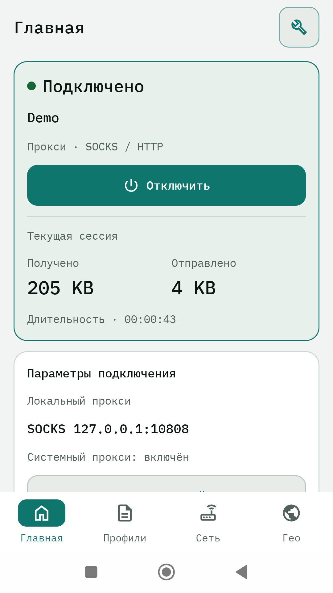
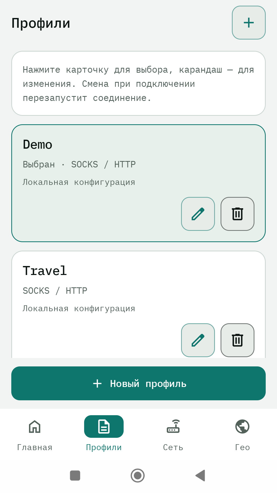
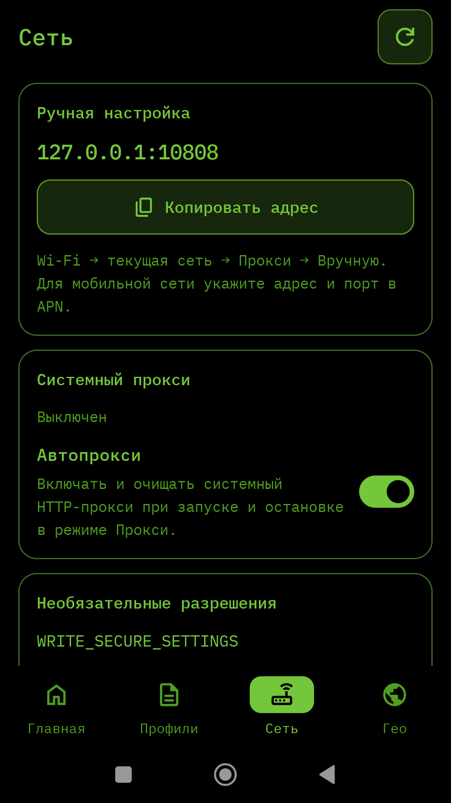
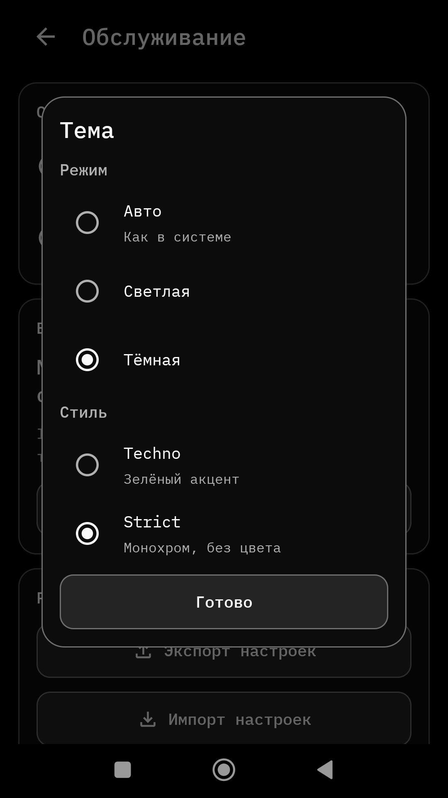

SHA-256
Смотрите SHA256SUMS.txt в последнем релизе.
Скриншоты




Возможности
Два режима
Системный VPN (TUN) и локальный SOCKS/HTTP-прокси на одном порту.
Подписки
VLESS, VMess, Trojan, Shadowsocks, SOCKS/HTTP, Hysteria2, Clash YAML и JSON.
Шаблоны и diff
Порты, routing и DNS сохраняются при обновлении; локальные правки не затираются.
Автопрокси
Системный прокси включается при подключении. Нужно одноразовое разрешение ADB или Shizuku.
Мониторинг
Статистика трафика, состояние серверов и управление балансировщиками.
Темы
Режим (авто / светлая / тёмная) и стиль (Techno / Strict) отдельно.
Приватность
Без рекламы, аналитики и трекеров. Настройки и журналы остаются на устройстве.
Установка
- Скачайте APK: Full — TUN и локальный прокси, Lite — только локальный прокси.
- Разрешите установку из этого источника, если Android попросит.
- Откройте APK и установите. Серверы не предоставляются: нужна ваша подписка или конфиг.
- Требуется Android 8.0 или новее.
Для автопрокси нужно одноразовое разрешение через ADB или Shizuku — инструкция. Без него используйте TUN-режим (Full) или настройте прокси в Wi-Fi вручную.
English
IINV is an Android client for Xray: system-wide VPN (TUN) or a local SOCKS/HTTP proxy. It works with your own subscription or JSON config. No accounts, ads or tracking. Full includes TUN, Lite is proxy-only. Android 8.0+. Auto-proxy needs a one-time ADB grant — see the guide. Downloads and checksums are on the releases page.